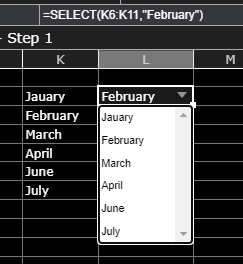

App building¶
There are multiple tools and elements in Streamsheets to help you build your Apps.
Timeseries data¶
Often it is important to not only work with single real-time data points in the moment, but to build a history and work with a series of values. In the Chart section we discussed ways of data representation, but we have not discussed how to gather this data in Streamsheets and how realtime updates work. The following solutions are perfectly helpful in situations, where permanent data storage is not neccessary. To permanantly save your data connect Streamsheets to a database like MongoDB, InfluxDB or TimescaleDB.
Timeseries data table¶
In an IoT environment it is essential to work with dynamic sets of data. The maybe most obviouse way to create a table, that dynamicaly updates overtime and uses messages from Streams to add information, is to use direct cell refernces. The following example shows how to create a short (stepwise) data history.
Note
Every sheet is calculated from left to right and from top to bottom. Consequently, cell A1 is calculated first followed by B1, C1 etc. proceding in the next rows in the same manner. Thanks to this concept, we can use references to create a history of values.
The cell at the very bottom references to the data input and the cells above the reference to the cell below. As higher cells are calculated first, they fetch the values of lower cells before these are calculated. In the end the last cells take the latest data input. Effectively it looks as if new values enter the history at the bottom and move up before leaving the series at the top.

Create data history in a Streamsheet
Timeseries functions¶
Using table in sheets feels natural, but holding huge chunks of data on a Streamsheet is not always the best decsion (especially if you don´t want to display the whole table and only use it as a base for charts). Tables cover a lot of space, which should be used for implementing your logic. This is where Timeseries functions come into play.
These functions track a cell and store the observed changes & timestamps over a certain amount of time. They basically create an invisible table fitted into one cell. The result is, that now Charts can use one function as a data range instead of huge tables. While the TIMESTORE function is used as a base for one or more TIMEQUERY functions, the TIMEAGGREGATE works on its own.
TIMESTORE & TIMEQUERY: TIMESTORE and TIMEQUERY operate like a short term database. The TIMESTORE function saves key value pairs over a specified period of time. Like a real databse, it creates a data table, which then again can be queried by the TIMEQUERY function. It is possible to not only query original values, but aggregate and filter the data. You can add one or more TIMESTORE function per Streamsheet and every TIMESTORE can be referenced by one or more TIMEQUERY function.


TIMEAGGREGATE: The TIMEAGGREAGATE function is the quick hack of TIMESTORE and TIMEQUERY. It monitors one key value pair over a specifed time. As the TIMESTORE function it stores the raw values and timestamps within the cell, while displaying the aggregated value as the cell value.

To create a chart with more then one data series just use multiple TIMEAGGREGATE() or TIMEQUERY() functions as the soure range.
Note
#LIMIT appears, when the set limit of stored key value pairs is reached. This is not necessarily a problem, it only means that old stores will be overwritten by newer ones.
Create Dashboards¶
Shapes¶
In some scenarios it is necessary, to not only control data streams and implement certain logics, but create dashboards to present the data to an end user. Dashboards are popular visual displays of data, mostly comprising charts / graphs with striking attention seeking components. If you want to learn more about how to setup Charts in Streamsheets click here. In this tutorial we cover another very useful tool Streamsheets offers, which is adding shapes. Shapes can be found next to the Chart icon in the App toolbar.

There are a ton of different shapes, which can be colored and sized the way you want. As everything else in Streamsheets, Shapes use functions as a base. A function can be used to add dynamic settings. For example, it is possible to dynamically set the size, coordinates or displayed information of a shape, just by referencing cells from a sheet. All shapes have a very similar function structure:
=DRAW.RECTANGLE(UnqiueId, Container, Name, X, Y, Width, Height, LineFormat, FillFormat, Attributes, Events, Angle, RotCenter)
Format changes can be done using simple inputs like hexadecimal codes for colors or more complex inputs using functions like FILLPATTERN() (add pictures via urls) FILLLINEGRADIANT() FILLRADIALGRADIANT(), (add color transitions) LINEFORMAT().
One important distinction is that only lable are able to display information as they have a “Text” parameter. Lable can be created over the shape menu or by double clicking a shape.
=DRAW.LABEL(UnqiueId, Container, Name, X, Y, Width, Height, LineFormat, FillFormat, Attributes, Events, Angle, RotCenter, Text[, Font])
Example use case: The dashboard should be able to represent different information in different tiles and give visual feedback. For each information you need representation create a shape e.g. rectangle and place it on the sheet. To display information double click to create a lable within the rectangle and link the “Text” parameter to the cell with the required information. To further visually support your given information, let´s switch back to the rectangle shape. In the “Fillformat” parameter we will now enter: IF(“cell reference”<300,”green”,”red”). Now a threshold of 300 is set to decide, wether the rectangle color is red or green.
Interactions¶
If your use case does require direct user input, there are multiple ways to allow these in Streamsheets. Before we dive into details, here a short reminder:
Note
Always hide your logic from the end user. They will likely get confused and/or change it.
- Only display the Streamsheet you want the end user to see. Open the App Settings and select it in the “Maximize Sheet on load” field
- Only share your App with end user over an URL that prohibits them from changing your logic.
There are multiple ways you can allow an end user to adjust the visualization of your dashboard.
SELECT()¶
A very fast and easy way to allow user interaction is the SELECT() function. It allows the end user to select a value from a list of options. This selection then can be integrated in your sheet logic.

Example use case: A dashboard is created to gather information on different type of animals in a zoo. The user is allowed to select from a list of animals. Depending on which animal is selected, the represented information change. Select “tiger” and the amount of tigers, their names etc. will be displayed or select “koala” to see all respective information about koalas.
Interactive Shapes¶
In the shape menu, in the controls category, you can find interactive elements. In a stopped or paused app, these elements can be adjusted as usual, by selecting the shape and changing the formula parameter. In a running app “control” shapes become interactive and are not selectable anymore.
- Checkboxes are very helpful in use cases, where switching between two states is necessary. They switch their value parameter depending on the user interaction to FALSE or TRUE. To work with these states use a cell reference in the value parameter. Now you only have to use the referenced cell in your sheet logic to react on state changes.Example use case: You want to only show certain information, when a check box is selected. FALSE represents that the information will not be shown. If the information you would like to hide is represented in an e.g. rectangle shape you could use the attributes parameter of the DRAW:RECTANGLE() function to switch between visible and not visible. Find more about the attributes’ parameter here.
- Slider allow the selection of values between a given minimum and maximum. Again referencing the value parameter to a cell gives you the power to integrate the selected value into your sheet logic.Example use case: An End User should be able to regulate a thermostat between the values of 15°C and 25°C. With the slider the user sets the wished temperature and the value gets set in the referenced cell of the value parameter. The value will be then published to the thermostat over e.g. an MQTT Stream. Now the user directly impacts the temperature by moving the slider.
- The Knob works exactly like the slider, but instead of sliding from left to right the end user animation is turning a knob.
- Button, like the checkboxes, set TRUE or FALSE values. The difference is, that they only set the value parameter to TRUE, as long as the user is pressing the button. After the release, the value turns back to FALSE. Again using a cell reference for the value parameter is the key to integrate the interaction in your sheet logic. Tip: Try to use EDGE.DETECT() if you only need a one time switch to TRUE.Example use case: An end user should be able to open a valve by pushing a button on the screen. The valve only knows two states “open” and “close” and is connected to a MQTT broker. The payload of the message will now change dynamically and depending on the state of the button either “open” or “close” will be published.
EVENTS()¶
The EVENTS() function adds another layer to end user interactions. In every shape formula there is one parameter called “Events”, which can be filled with a number of event functions:
Integrating one or more events in the EVENT() function, adds the possibility to define actions. For example: EVENTS(ONCLICK(COPYVALUES(A1:B11,G10:H10)) triggers the COPYVALUE() function after an onclick action by the user.
Other functions which could be used in this context:
MQTT.PUBLISH() (or any other stream function)
DELETE()
STACKADD() (or any other stack function)
Stream Function Wizard¶
Usually Functions are created by entering “=” followed by the name of the function in a cell. This process is supported by the function inline help, which prompts suggestions and parameter support.
To further simplify the creation of functions the “Stream Function Wizard” was added. The Fuction Wizard supports mainly the creation of so called Stream Functions. These are functions which use a Stream (Producer/Consumer) to communicate with entities outside of an App and usually are of a more complex structure than regular functions.
To open the “Stream Function Wizard” select the cell, where the function should be inserted and click in the top bar on the Function Wizard Icon. The Wizard will open on the right side of your screen. Now first select the Stream Function followed by the Stream. Depending on the chosen Stream Function a set of different other parameter is required.
When finished click “Ok” to eventually create the function.
Note: In version 1.5 the icon for the stream functions was changed 

JSON Range¶
Streamsheets are using the JSON format to transfer and process data. Creating a JSON-Range in a Streamsheet helps you to easly structure your data keys in a hierarchical order. This is needed when you are about to transmit data and need it structured in a certain way. In a Streamsheet this is possible by writing all your key value pairs below each other. After (or before) you are done, select all cells and right-click. Choose “Define JSON-Range” on the bottom of the menu. Now you can start structuring your data using TAB and Shift+TAB to change the hierarchy of a key value pair.
 Create a JSON Range
Create a JSON Range
{“Interesting Data 1”:12,“Interesting Data 2”:15,“More Data”:{“Data from A”:17,“Data from B”:1234,“Data from C”:625,“Data from D”:892}}IF Column¶
 Add a condition to a whole row
Add a condition to a whole row